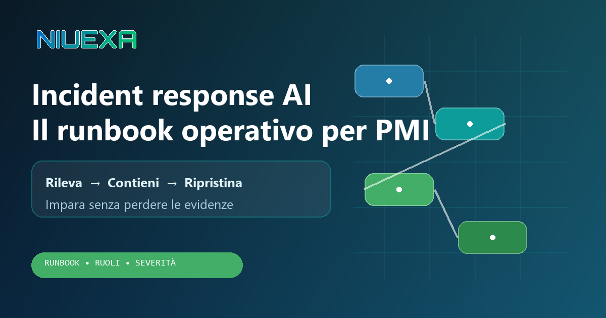
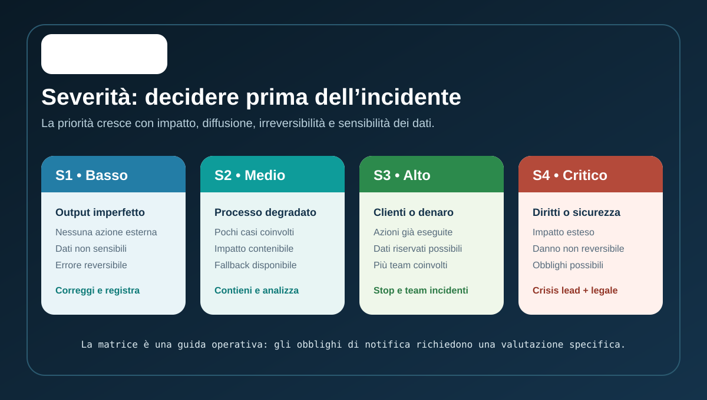
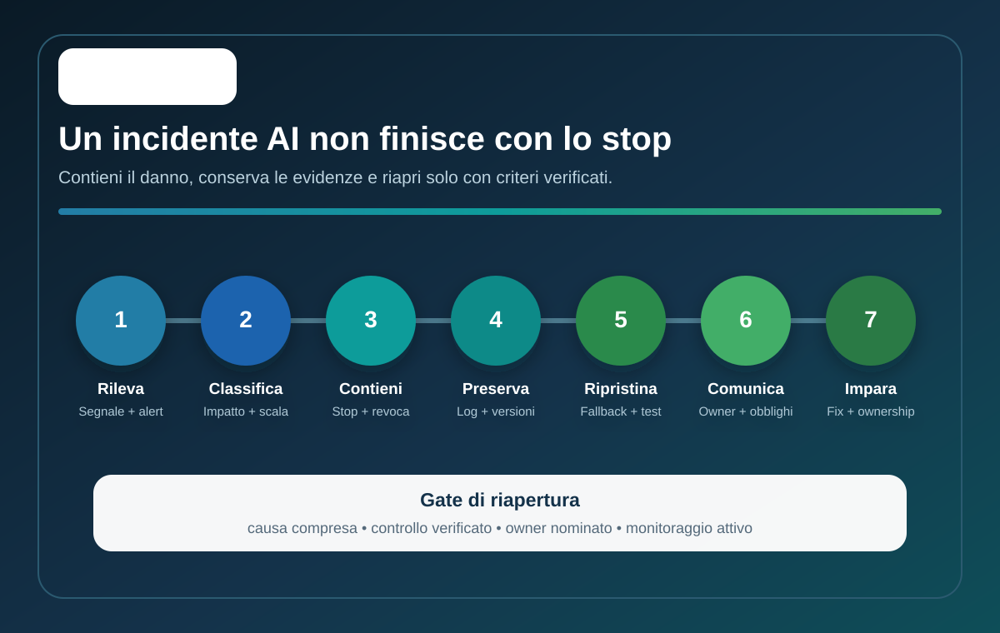

Risposta rapida: che cos’è l’incident response AI?
L’incident response AI è il processo con cui un’azienda rileva, classifica, contiene e risolve eventi inattesi legati a un sistema AI. Un incidente può essere un output falso inviato a un cliente, un agente che esegue un’azione non autorizzata, una fuga di dati attraverso prompt o retrieval, un degrado improvviso della qualità oppure l’impossibilità di ricostruire quale modello e quali fonti abbiano prodotto una decisione. Il runbook stabilisce in anticipo chi decide, che cosa fermare, quali prove conservare e quando il sistema può tornare operativo.
Perché il piano IT tradizionale non basta
Un guasto applicativo classico tende a essere riproducibile: un servizio non risponde, un database è indisponibile, una release introduce un errore. Un incidente AI può invece dipendere dall’interazione tra input, contesto recuperato, versione del modello, prompt di sistema, strumenti disponibili e decisioni umane. Due richieste simili possono produrre esiti diversi.
Per questo non basta registrare “errore del chatbot”. Bisogna ricostruire la catena: chi ha inviato l’input, quale conoscenza è stata recuperata, quale versione era attiva, quali tool sono stati chiamati, quale azione è stata eseguita e quale controllo avrebbe dovuto intervenire. Il NIST AI RMF include meccanismi organizzativi per identificare e gestire i rischi; il profilo NIST per l’AI generativa invita inoltre a verificare e aggiornare processi di risposta e disclosure degli incidenti.
Per una PMI il principio è semplice: integrare l’AI nel processo di incident management esistente, aggiungendo le evidenze e le decisioni specifiche dei sistemi probabilistici. Non serve creare una centrale operativa separata; serve evitare che l’AI resti una zona senza owner.
Prima dell’incidente: prepara cinque elementi
- Inventario: sistema, owner, uso previsto, dati, integrazioni, utenti, fornitore e criticità del processo.
- Telemetria: log di input e output consentiti, versioni, fonti, chiamate a strumenti, decisioni umane e alert, con minimizzazione e retention definite.
- Kill switch: modalità per sospendere invii, pagamenti, aggiornamenti o accessi senza spegnere servizi non coinvolti.
- Fallback: percorso manuale o degradato che mantiene il servizio essenziale mentre l’AI è isolata.
- Contatti: incident lead, process owner, referente tecnico, privacy/legale e comunicazione, con sostituti e reperibilità proporzionati al rischio.
Se questi elementi vengono cercati durante l’emergenza, il tempo di contenimento aumenta e la ricostruzione diventa meno affidabile.
La matrice di severità: da S1 a S4

| Livello | Esempio | Risposta minima |
|---|---|---|
| S1 — Basso | Bozza interna errata, intercettata prima dell’uso. | Correzione, registrazione e verifica di ricorrenza. |
| S2 — Medio | Classificazione errata su un gruppo limitato di ticket. | Contenimento, fallback e analisi entro lo SLA interno. |
| S3 — Alto | Azioni errate verso clienti, dati riservati possibili o impatto economico. | Stop del flusso, incident team, verifica legale/privacy e comunicazione controllata. |
| S4 — Critico | Impatto esteso o non reversibile su diritti, salute, sicurezza o dati sensibili. | Crisis lead, contenimento immediato, decisioni esecutive e valutazione degli obblighi esterni. |
Questa classificazione è una guida operativa Niuexa, non una classificazione legale. Gli obblighi di notifica dipendono dal sistema, dal ruolo dell’organizzazione, dai dati e dalla normativa applicabile.
Il runbook in sette fasi

1. Rileva e apri un evento
Accetta segnali da utenti, controlli automatici, monitoraggio qualità, sicurezza e fornitori. Registra subito timestamp, sistema, segnalante, comportamento osservato e azione già avvenuta. Evita diagnosi premature.
2. Classifica impatto e perimetro
Chiedi quali persone, dati, processi e canali sono coinvolti; se l’azione è reversibile; se il comportamento continua; se altri sistemi condividono modello, credenziali o knowledge base. Assegna una severità provvisoria, che può aumentare.
3. Contieni con il minimo raggio d’azione
Sospendi la funzione rischiosa, revoca token o permessi compromessi, disabilita un tool, congela una versione o devia sul fallback. Non applicare modifiche non tracciate “per vedere se passa”: possono alterare le evidenze e introdurre nuove variabili.
4. Preserva le evidenze
Conserva input e output pertinenti, prompt di sistema, versione del modello, parametri, documenti recuperati, log delle chiamate, identità, autorizzazioni, configurazioni e decisioni umane. Proteggi accesso, integrità e tempi di conservazione; non raccogliere dati oltre il necessario.
5. Correggi e ripristina per gradi
La correzione può riguardare dati, istruzioni, accessi, validazioni, soglie, interfaccia o processo. Verificala su casi normali, edge case e caso dell’incidente. Riapri prima in ambiente controllato o su traffico limitato, mantenendo fallback e monitoraggio rafforzato.
6. Comunica con una fonte unica
Definisci un incident lead e un log decisionale. Aggiornamenti interni, assistenza clienti, fornitori e valutazioni normative devono partire dallo stesso stato verificato. Distingui fatti, ipotesi e azioni in corso. Evita messaggi rassicuranti prima di conoscere perimetro e impatto.
7. Chiudi con un post-mortem
Documenta sequenza, causa, controlli mancanti, tempo di rilevazione, tempo di contenimento e impatto. Ogni azione correttiva deve avere owner e scadenza. Il post-mortem non cerca un colpevole: cerca la condizione che ha permesso all’errore di raggiungere il processo reale.
Il gate di riapertura
Un sistema non torna in produzione solo perché “sembra funzionare”. Prima della riapertura verifica:
- la causa è compresa abbastanza da evitare una replica immediata;
- il controllo correttivo è stato testato sul caso dell’incidente e su casi adiacenti;
- credenziali, permessi e versioni sono coerenti con il perimetro approvato;
- fallback e kill switch sono disponibili;
- un process owner accetta il rischio residuo;
- alert e campionamento rafforzato sono attivi per un periodo definito;
- eventuali comunicazioni o adempimenti sono stati valutati dai ruoli competenti.
Per S3 e S4 è utile una decisione nominativa di go/no-go. Per S1 e S2 può bastare un’approvazione operativa tracciata, purché il criterio sia stabilito prima.
KPI per migliorare la risposta
- Tempo di rilevazione: dall’inizio dell’evento al primo alert attendibile.
- Tempo di contenimento: dall’apertura alla sospensione del comportamento rischioso.
- Escalation corretta: quota di eventi assegnati al livello e ai ruoli appropriati.
- Recidiva: incidenti simili dopo la correzione.
- Copertura delle evidenze: eventi per cui versione, fonti, azioni e identità sono ricostruibili.
- Tempo in fallback: durata e capacità del percorso alternativo.
Non usare il numero assoluto di incidenti come unico KPI: un sistema con segnalazioni aperte e tracciate può essere più maturo di uno che non rileva nulla.
Fonti e perimetro
Il runbook e la matrice di severità sono una guida operativa Niuexa. Sono informati da:
- NIST AI Risk Management Framework, per governare, mappare, misurare e gestire i rischi AI.
- NIST AI 600-1, Generative AI Profile, che include azioni su incident response e incident disclosure.
- OWASP GenAI Incident Response Guide, guida per professionisti della sicurezza che gestiscono incidenti GenAI.
- Commissione europea, quadro dell’AI Act, per ruoli, approccio basato sul rischio e casi che prevedono gestione o segnalazione di incidenti seri.
Il contenuto è informativo e non sostituisce una valutazione legale, privacy, cybersecurity o regolamentare sul caso specifico.
FAQ sulla gestione degli incidenti AI
Che cos’è un incidente AI?
È un evento in cui un sistema AI produce o abilita un comportamento inatteso con impatto su dati, persone, denaro, sicurezza, conformità o continuità.
Qual è la prima azione?
Mettere in sicurezza il processo: fermare azioni rischiose, limitare accessi e attivare il fallback, preservando log e versioni.
Quali evidenze devo conservare?
Input e output pertinenti, timestamp, identità, permessi, versione del modello e del prompt, fonti recuperate, tool chiamati e decisioni umane.
Ogni incidente va notificato?
No. Gli obblighi dipendono da sistema, ruolo, gravità e normativa applicabile; serve una valutazione specifica.
Quando posso riattivare il sistema?
Quando causa e controllo sono verificati, il fallback resta disponibile, un owner accetta il rischio residuo e il monitoraggio è attivo.